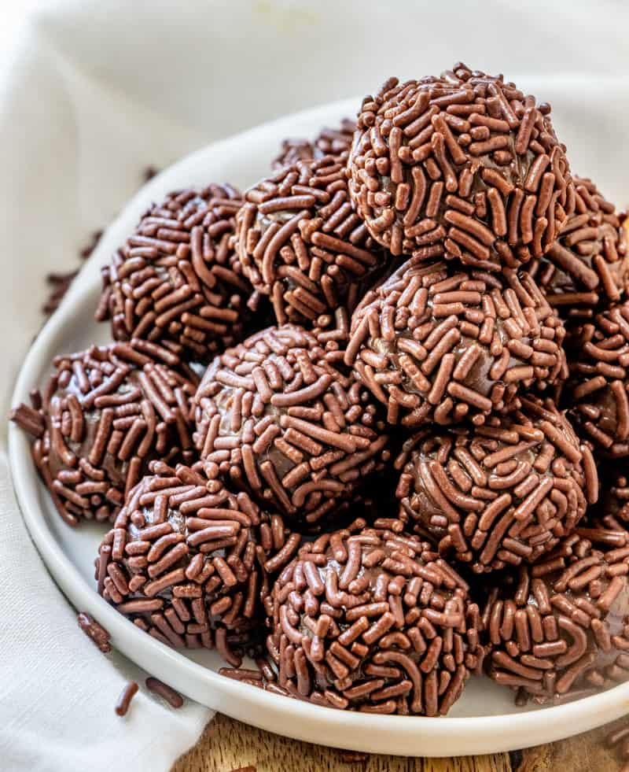

Brigadeiro

Description
A traditional brazilian, chocolately treat served at birthdays and holidays. Incredibly simple to make with even simpler ingredients.
Ingredients
- 3 tablespoons of unsweatened coco
- 1 tablespoon of butter
- 1 (14 ounce) can of sweetened condensed milk
Steps
- In a medium saucepan over medium heat, combine cocoa, butter and condensed milk.
- Cook, stirring, until thickened, about 10 minutes.
- Remove from heat and let rest until cool enough to handle.
- Form into small balls and eat at once or chill until serving.